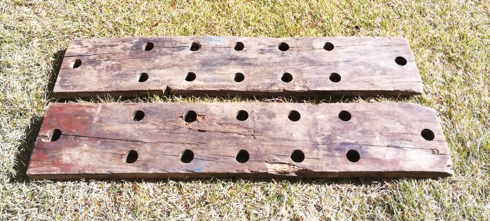
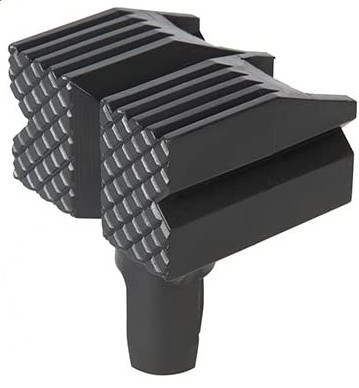
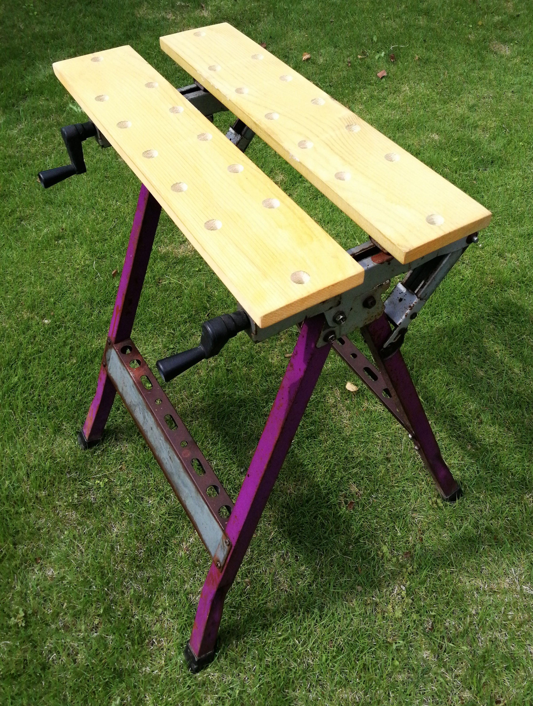

古い道具たち – 折りたたみワークベンチ
知人の紹介でこの土地＝片品村にお世話になっていますが、 ん十年前 にウッドデッキを作ったりするために色々な工具や道具を購入しました。 この 折りたたみワークベンチ も、ん十年来の付き合いです。
長い付き合いの期間中、使わないときは一年中 屋外 に置きっぱなしにしていました。 一応ブルーシートで覆ってはいましたが、ここの標高は1,000mほどあります。冬場は天板の高さまで雪が積もります。 そうしたとても厳しい、というか悪条件の中で長年「屋外生活」をさせた道具が急にいとおしくなってきました。
そこで今日のテーマは：
長年の「虐待」でいたんだワークベンチを復活させよう！
です。
お手入れ開始
ワークベンチの金属部分はサビだらけ、とくに折りたたみの 可動部 は固まってほとんど動かない状態でした。また狭い空間には正体不明の虫が巣を作った形跡がたくさんありました。こんなになるまで放置してほんとうにごめんなさい、という感じです。
まずは各部にサビ取りオイルをスプレーし、真鍮ブラシで念入りにサビを取れるだけとりました。また細部に詰まったゴミや虫の痕跡などは、竹クシやピンセットを使ってていねいに取り除きました。
半日ほどの作業で、可動部はほぼスムーズに動くようになりました。 外見の ビンテージ感 はやむを得ませんが、 機能的には使えるようになりました。昔の道具は大したもんですね。
一番の問題は天板。図のように腐敗やひび割れ、歪みがひどくて、とても細かい木工作業には使えません。

Figure 1: 取り外したワークベンチの天板
天板は新品に交換するしかない状態です。
天板について
天板を実測したところ、 19mm x 120mm x 605mm (厚みx幅x長さ)です。 厚みからして、これはまさに 1x6 の板材ですね。 要するに、1x6板材の幅を20mmカットして 120mm にし、長さを 605mm にカットするだけですね。
1x6の板材はどこのホームセンターでも売っていて容易に入手できます。 しかし今回は、天板としては白木のSPF1x6板材ではなくて屋外使用に向いた SPF ACQ材 (高耐久防腐剤注入材)を使うことに決めました。
それで調べてみると、実際に1x6の ACQ材 を扱っているホームセンターは多くありません。たまたまジョイフル本田にあったので店舗取り置き予約して入手しました。
ワークベンチの丸い穴
どのメーカのワークベンチにも天板には昔から 丸い穴 があいています。 この穴は、図2のような「 黒いプラスチック 」を差し込み、 工作する板材をはさんで固定するためのもの。 つまりベンチそのものに クリップ とか バイス の機能を持たせるわけです。
ところがこの「黒いプラスチック」の名称がわからず四苦八苦しました。 各社が独自に？いろいろな名称をつけていて、結局日本語の「正式名称」はわからずじまいですが、英語では plastic bench dogs と言えば通じるようです。この語でAmazonで検索すると山ほどヒットします。 fix clamp とも言うようです。

Figure 2: 部品の名前はdogだった！
bench dogの シャフト （足）をこの穴に差し込みます。その直径と長さは一般的には次の表1 のとおりです。
| シャフトの直径 | シャフトの長さ |
|---|---|
| 19mm (3/4 inch) | 39mm (1〜1/2 inch) |
天板の穴あけ作業
表1の通り、天板には19mmの穴あけが必要ですが、 木工用ドリル刃として手元にあったのは太さ 15mm まで。 そこで、浅い貫通穴あけに使う木工用「 ショートビット （19mm）」をホームセンターで購入しました。
まず鉛筆で穴位置の 墨つけ をし、 マーキングテープ で板の表裏と方向をマーク。これをやらないと作業中に左右裏表がわからなくなります。
しっかりと 当木 をしてクランプで作業台（このベンチとは別の）に固定し、 センターポンチ で位置決めした後、19mmショートビットで穴あけ。ちなみにこのセンターポンチはボクが大学院生だったときに実験装置を作る際に、アルミ板に穴をあけるために 1974年 前後に購入したものです。
穴の数は多いですが、作業は始めたらあっという間に終わりました。
防腐剤塗布
ACQ材 なので板材そのものに防腐・防虫塗料が浸透されていますが、カットした切り口部分は白木のまま。そこで、切り口だけでなく全面に、手持ちの防腐・防虫ペイントを塗布しました。ペンキが十分に乾燥したら、天板を裏から木ネジで固定。図はほぼ修復を終えたワークベンチの勇姿ですw

Figure 3: ほぼ修復完了したワークベンチ
ハンドルはクルクルと軽く回るし天板もスムーズに移動します。折りたたみも、まるで新品のような滑らかさ。今後は、使い終わったらきちんとたたんで物置にしまうことにします。この先、少なくとも ん十年 は使えますねｗ
想定外のできごと
ショートビット
ふつう大きな穴をあけるときには小さめの 下穴 をあけるのですが、ショートビットの場合には下穴をあけると刃が進んで行かないようです。 つまり刃の先っぽにある先導の小さな木ねじが材に食い込んで、それが 推進力 となる。大きな刃の方は単に木ねじに引っ張られてカットするだけで、自分では推進力を持たないんですね。
また19mmのショートビットは 逆回転 のできるドライバでないと、穴があいたあと刃が抜けなくなります。練習のために、はじめに逆回転機能のないドライバを使って別の材に穴をあけたら抜けなくて困りましたｗ。
ベンチの メーカ名 がわからない！
ん十年年 もの虐待に耐えながらちゃんと動くようになったワークベンチに、つよい愛着が湧いてきました。一体この頑健ですばらしいベンチを作った会社はどこ？
ワークベンチの脚部パネルを見ると、図4のような製造メーカのロゴが刻印されています。 "S"という文字を背景にして、その上に"K"が乗っている形です。
Figure 4: メーカのロゴ
そこで、 SK または KS が社名またはブランド名なのだろうと色々調べてみましたが、このロゴを持つ会社は見つかりませんでした。「 教えて！goo 」にユーザ登録し画像をアップして質問してみましたが、そうしたらすぐに「 SSK ではないか？」という親切な回答がありましたが、残念ながらまだ確認はできていません。自分でも、特許庁の商標検索ページや、さらにはWIPO（世界知的所有権機関）の商標検索DBで調べてみたのですが、未だにこのロゴがどこの会社のものか不明です。どなたか教えていただけるとありがたいのですが・・・